I make videos for a living, and most of my tools come from small, annoying moments on set or in the edit. Space Prompter was the first: our teleprompter apps kept fighting us, so I built my own. Once it worked, the same itch showed up in three more places: guessing how long a script would run, finding out after upload that the timestamp covered my thumbnail text, and not knowing which link in a description actually brought the click.
So now there are four. Here is what each one does.
Where they stand. Space Prompter is the most finished of the family: version 3.5, with more than a hundred changes since the first version. Space Timer, Space Safe and Space UTM are new and early. They work today, and they will grow as I use them on real projects. If something is missing or wrong, tell me.
What they shareOne look, one key
All four are black and white, with red only when something needs fixing. None of them asks you to sign up, and none of them uploads your scripts, images or links anywhere.
And they all answer to the space bar. It started in Space Prompter, where Space plays and pauses the script so you never hunt for a button mid-take. It felt so right that every tool got its own Space action: tap for the main thing, hold for the second. Each app shows a small keycap in the corner that presses down with you.
| Tool | Tap Space | Hold Space |
|---|---|---|
| Prompter | Play or pause. Double-tap for the previous paragraph. | Jump back to the top |
| Timer | Start or stop the pace stopwatch | Show the read time full screen |
| Safe | Switch between your thumbnail versions | Hide every overlay to see the clean image |
| UTM | Copy the next link in the list | Show that link as a big QR code |
Space never fires while you are typing in a field, so a script or a URL still gets its spaces.
A browser teleprompter built around how a shoot actually runs. Paste a script, press Space, and it scrolls past a red guide line at the speed you set.

- Four setups. Dual Monitor (controls on your screen, a mirrored stage window facing the camera), Single Monitor, Tablet and Mobile.
- Foot pedal. Any pedal that sends a key press works. Map a button to act exactly like Space.
- Phone pairing. Scan a QR code and the script opens on your phone or tablet, stays in sync, and either device can play and pause.
- Camera-ready. Rotate, flip horizontally or vertically for beam-splitter glass, and set the text size, margin and alignment.


The full build story is in How I built Space Prompter in four days.
Paste a script and see how long it takes to read at your own pace, section by section. Everyone reads faster in their head than out loud, so a script that "feels like three minutes" often shoots at five.
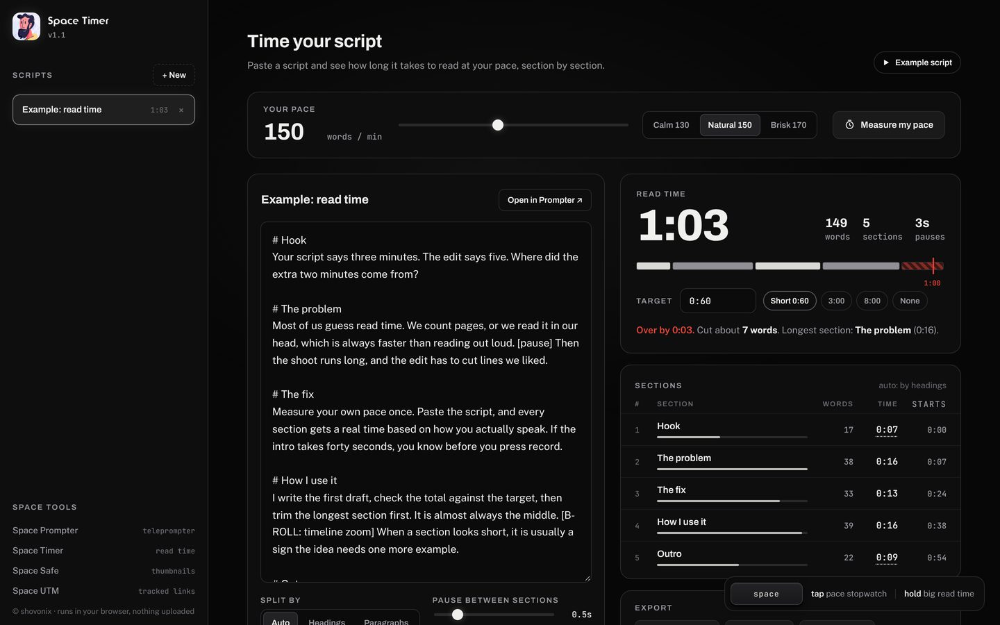
Measure your real pace
Tap Space, read a short text out loud the way you would on camera, and tap Space again. Space Timer works out your words per minute and uses it everywhere. You can also read the start of your own script instead of the sample.
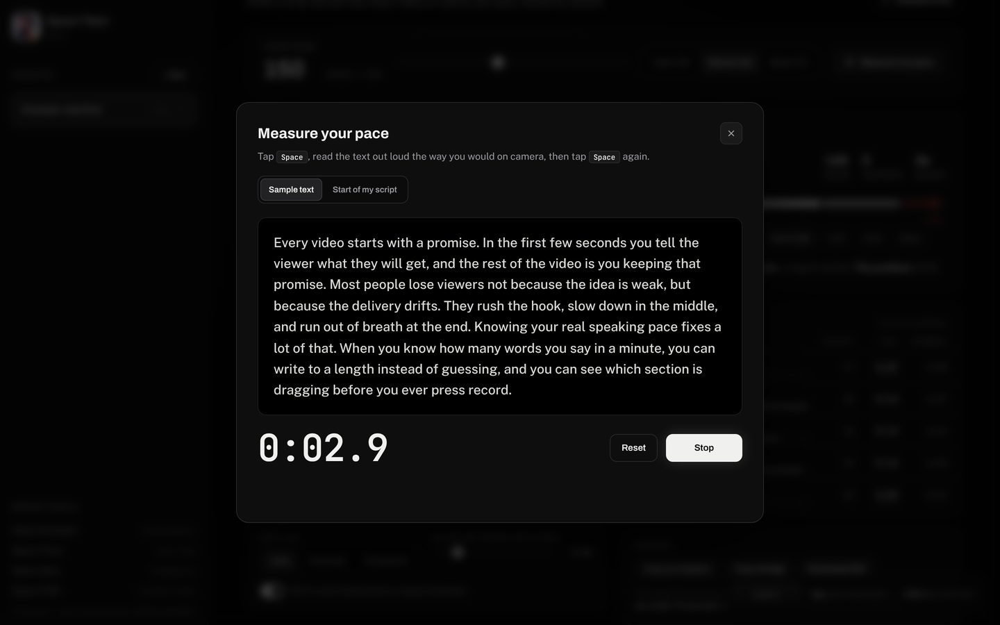
Hit your length
Sections are found from headings like # Intro, a line in [BRACKETS], an ALL CAPS line or a short line ending in a colon. Text in square brackets is treated as a direction and not counted, and [pause 2s] adds time where you stop on purpose. Set a target like 0:60 and it tells you how far over you are, how many words to cut and which section is longest.
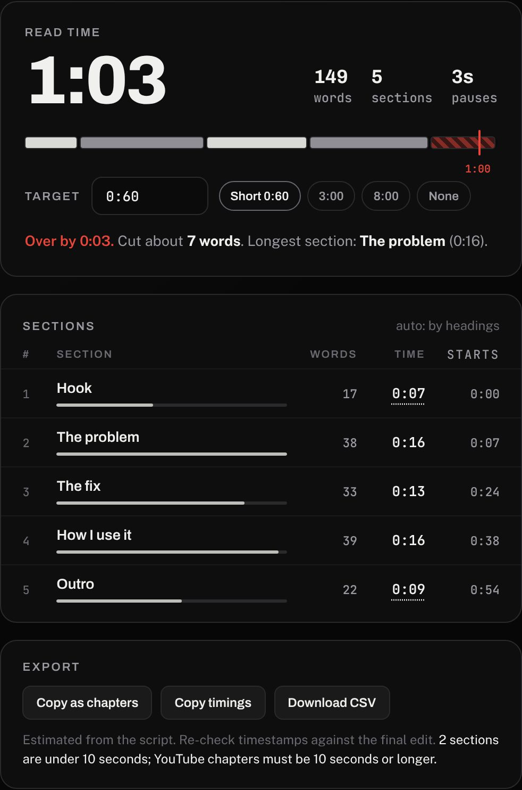
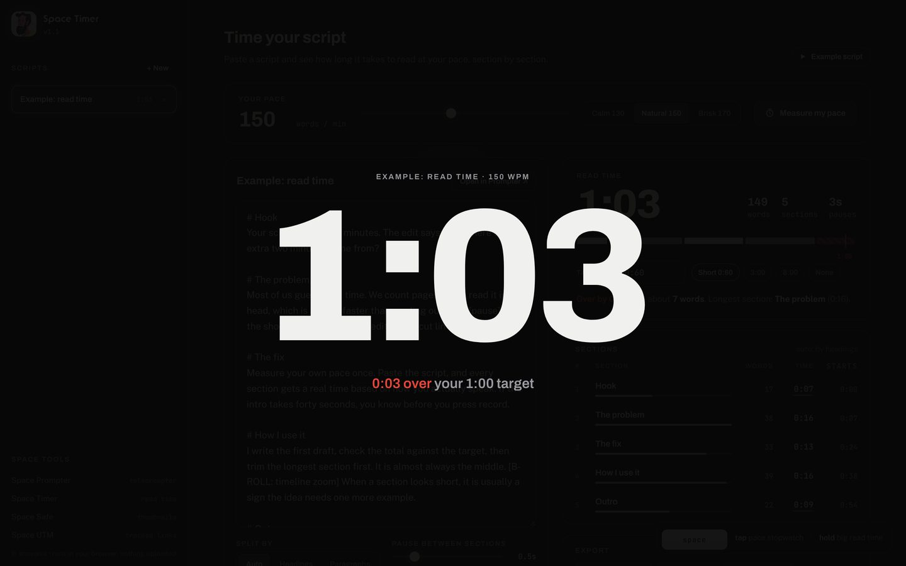
You can copy the sections as estimated YouTube chapters, copy the timings for your editor, download a CSV, or send the script straight to Space Prompter.
Drop in a thumbnail and see it the way viewers will: under the timestamp, in the feed, on a phone and as a tiny sidebar card, before you upload. The image is read in your browser and never leaves your device.
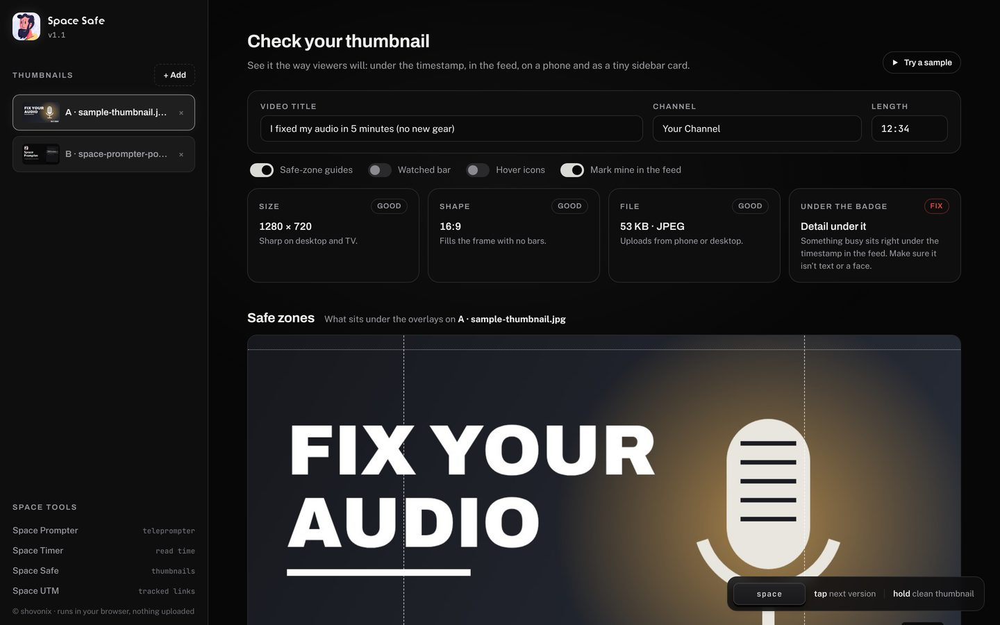
Safe zones
The timestamp badge is a fixed size, so it covers far more of a small thumbnail than a big one. Space Safe draws both zones, the home feed and the 168 px sidebar, plus the crops chat apps and social sites make when you share the link.
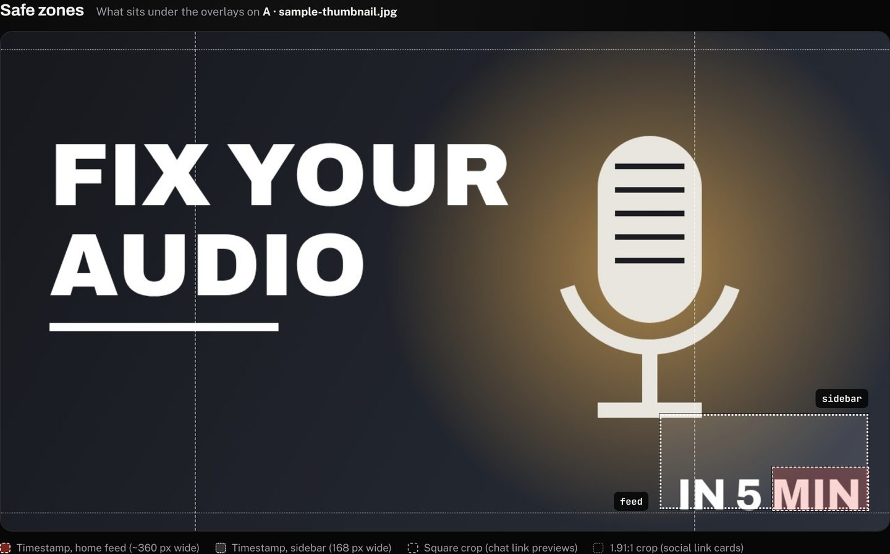
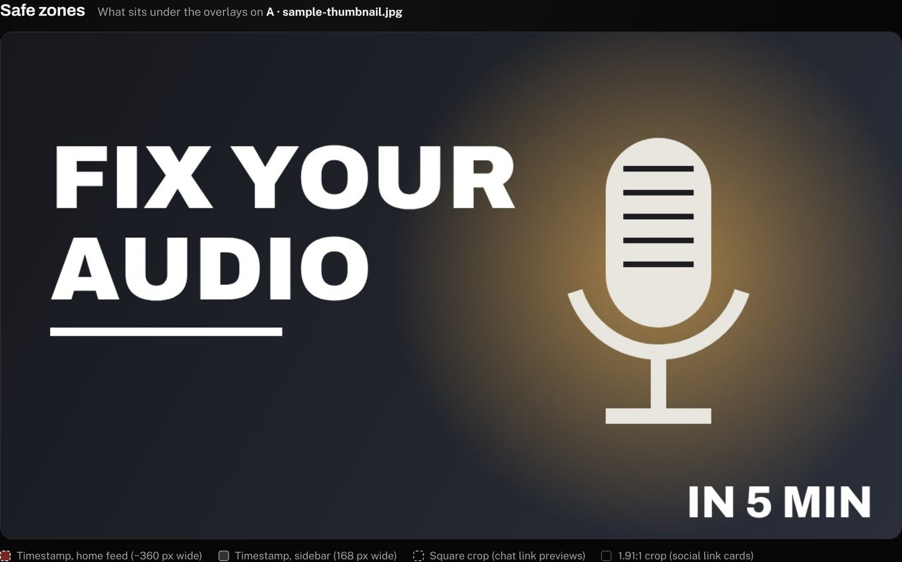
In context
Your thumbnail sits next to other videos in a dark and a light feed, with your own title and channel name. Load up to three versions and they appear side by side; tap Space to switch which one you are inspecting.
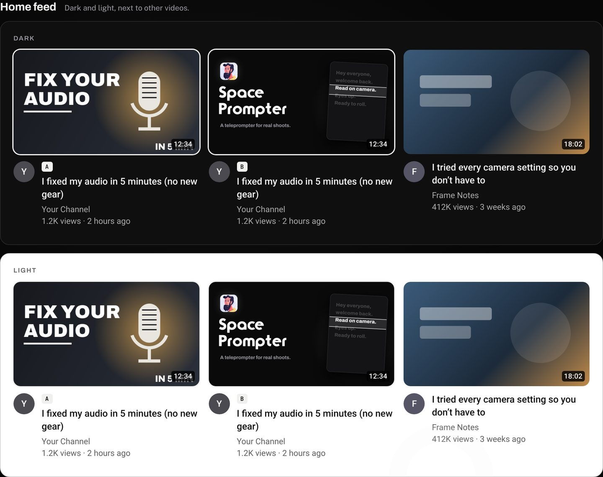
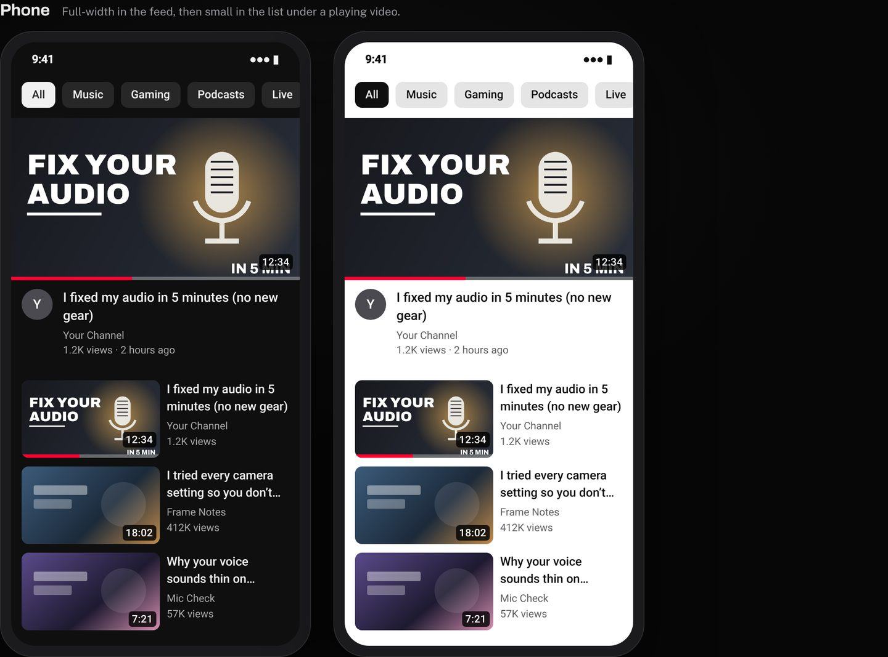
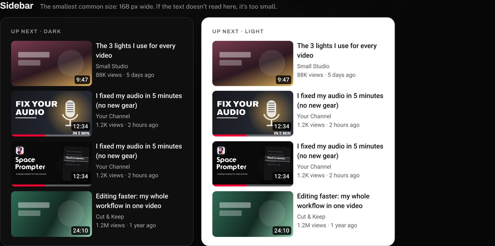
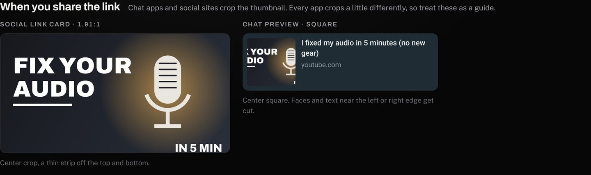
The previews follow YouTube's layout as of late 2026. YouTube changes often, so treat them as a guide for catching problems, not a pixel-perfect copy. Space Safe is not affiliated with YouTube.
One video, every place you post it. Space UTM builds a tracked link for each placement, so your analytics can tell the description link from the pinned comment, the Instagram bio or the newsletter. It grew out of the link builder I made for my team at work.
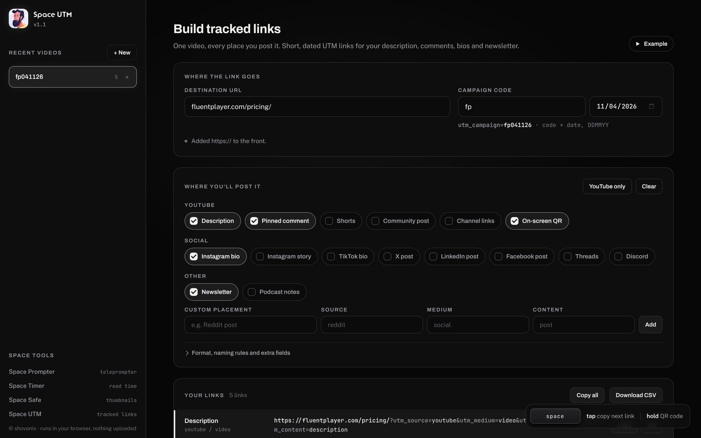
Short, dated campaigns
Each campaign is a short code plus the date as DDMMYY, so fp on 22 July 2026 becomes fp220726. The date defaults to today and can be changed, so an old link can be rebuilt exactly. Names are lowercased so reports do not split, old UTM tags are replaced, and it warns about campaign names that GA4 would file under the wrong channel.
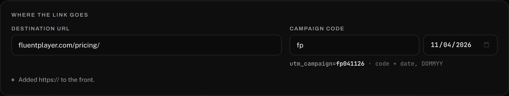
Copy, paste, Space, paste
Tap Space to copy the next link in the list. Paste it into YouTube Studio, tap Space, paste the next one. Hold Space to show the current link as a QR code. For your edit, every link also has a 1200 px QR code in black on white or white on transparent.
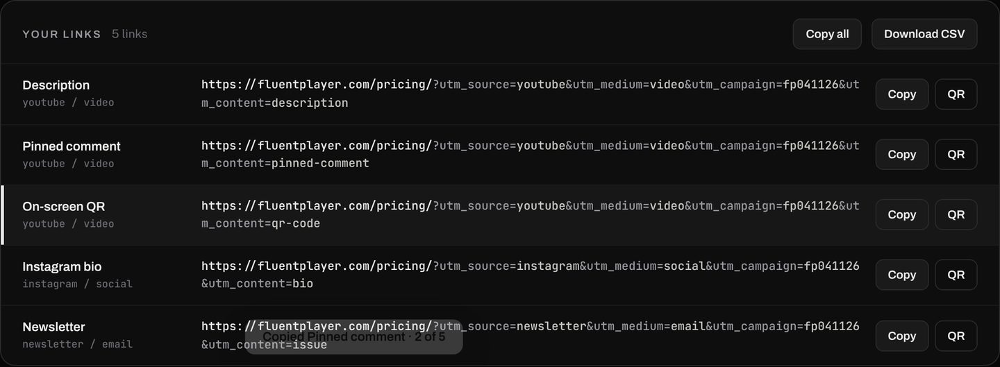
Space UTM does not shorten or redirect links. They point straight at your site, so nothing breaks if this site ever goes away.
What is nextThey will grow
Timer, Safe and UTM are at the start. A few directions I am exploring:
- Space Timer: a length verdict based on your own channel, by reading an export from YouTube Studio, instead of internet averages.
- Space Safe: a quick way to re-measure YouTube's overlays when the layout changes, with a "last checked" date on screen.
- Space UTM: a dashboard that shows which of your links brought visits, from your own analytics.
None of these are promises yet. What gets built depends on what helps on real shoots, so if one of these tools saves you time or gets in your way, I would love to hear about it. Send me a message.
Written by
Shovon Arifin
Motion Graphic Designer, WPManageNinja